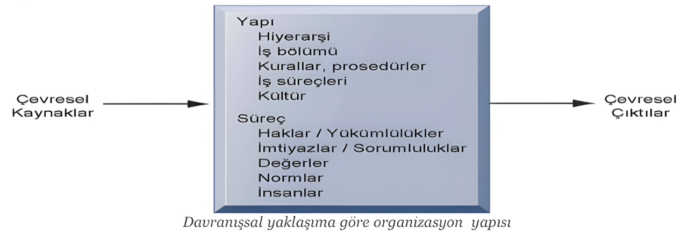
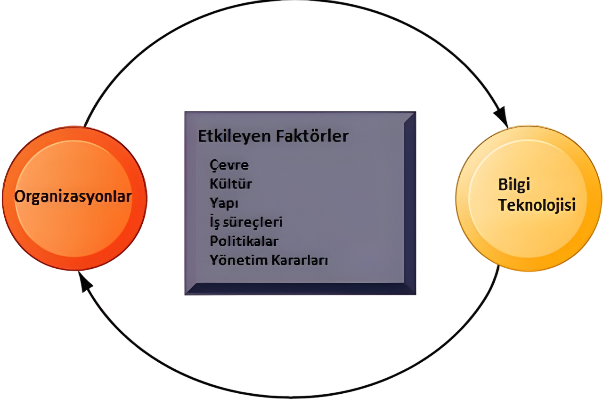
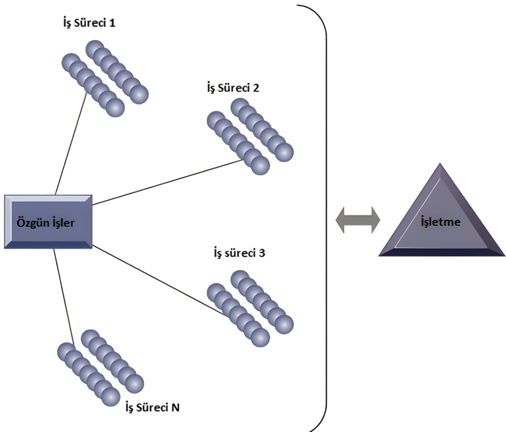
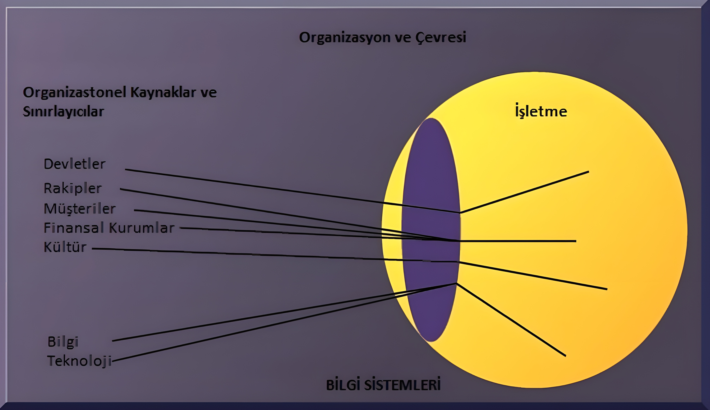
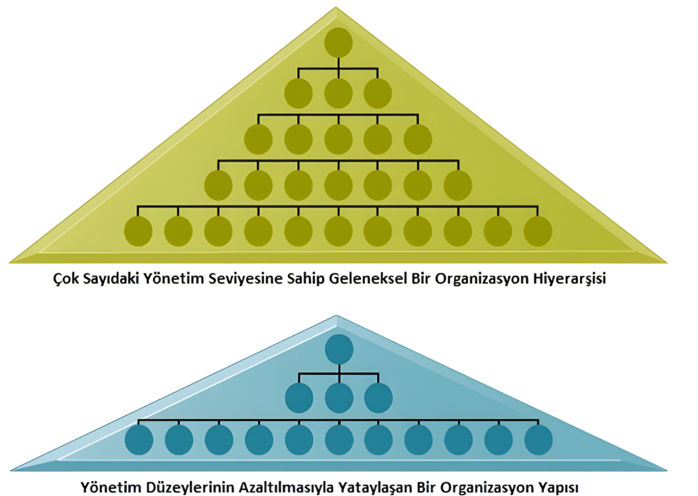
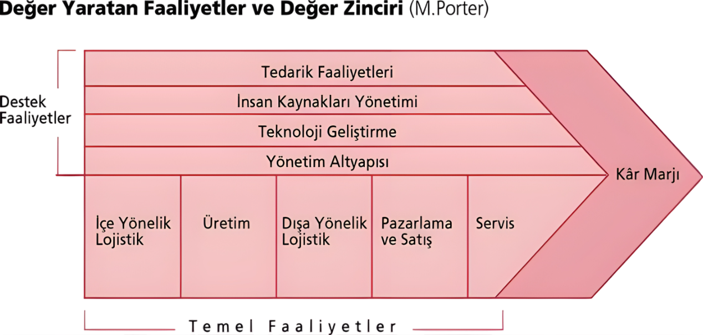

Bilişim Sistemleri, Organizasyon ve Strateji Öğrenme Modülü
Bu modül, bilişim sistemlerinin organizasyonlar ve stratejik karar alma süreçleri üzerindeki etkilerini kapsamlı bir şekilde ele almaktadır. Lütfen yukarıdaki menüden ilgili konuları seçerek öğrenmeye başlayın.
Bu Modülde Neler Öğreneceksiniz?
Organizasyonların temel yapı taşları ve özellikleri.
Yıkıcı teknolojilerin pazar dinamiklerine etkileri.
Farklı organizasyonel yapılar ve bu yapıların BT ile ilişkisi.
Bilgi sistemlerinin organizasyonlar üzerindeki ekonomik ve davranışsal etkileri.
İşlem maliyetleri ve vekalet teorisi gibi temel ekonomik teorilerin BT bağlamında incelenmesi.
Değişime karşı organizasyonel direnç ve başa çıkma yöntemleri.
İnternetin organizasyonlar üzerindeki dönüştürücü rolü.
Porter'ın Rekabetçi Güçler Modeli ve Değer Zinciri Analizi gibi stratejik yönetim araçları.
Ağ tabanlı stratejiler ve sürdürülebilir rekabet avantajı.
Organizasyon Temelleri
Organizasyon Nedir?
Çevreden gerekli kaynakları alıp işleyerek çıktı hâline dönüştüren, kendi kuralları olan sosyal ve yasal bir yapıdır.
Bağlam: Kaynaklar tabii ki çevreden alınacak. Yeni bir şey üretmek esas olduğundan işleyecek ve çıktıya dönüştürecek. Açık sistem olarak çalıştığından sosyal bir yapı olacak ve devlet sınırları içerisinde olduğundan da yasal bir yapı olacak.
Teknik bakış açısıyla organizasyonlar; yeni teknolojiler kullanıldığında girdilerin nasıl çıktılar hâline geleceğine odaklanır.
Davranışsal Yaklaşıma Göre Organizasyon
Davranışsal yaklaşıma göre organizasyon; makine veya teknik düzenlemelerden ziyade haklar, ayrıcalıklar, yükümlülükler ve sorumluluklar içeren bir sistemin kurulmasına veya mevcut sistemin yeniden yapılandırılmasına odaklanır. Grup ilişkileri, değerler ve yapılar bu yaklaşımda önemlidir.

Organizasyonun Üç Temel Unsuru
Sermaye
Emek
Çevresel Kaynaklar (Doğal Kaynak)

Organizasyonların Özellikleri
Aşağıdaki tüm özellikler organizasyonda kullanılan bilgi sistemlerini tür ve içerik olarak yakından etkiler.
Hiyerarşik yapı / Otorite
İş birimleri ve iş gücünün sorumluluk ve verimlilik odaklı dağılımı.
Rutinler ve iş süreçleri
Organizasyon kültürü ve politikaları
Çevre
Rutinler (Standart Faaliyet Prosedürleri)
Bütün organizasyonların üretim ve hizmet süreçlerini özgün olarak geliştirilmiş standart faaliyetlerle yürütmek ister.
Rutinler, bilinen durumlarla başa çıkabilmek için geliştirilen kesin kural, yöntem ve uygulamalardır.
İş Süreçleri
Rutinlerin toplamıdır.
Çalışanlar alışılagelmiş süreçleri bildikleri için oldukça verimli ve etkili olabilmektedir. Bu sayede işletme, etkinliğini artırarak maliyetleri azaltır ve gelirlerini yükseltir.

Önemli Not
Rutinler iş süreçlerini ve iş süreçleri de işletmeyi oluşturur.
Organizasyon Kültürü
Organizasyonun amaçlarını ve ürünlerini tanımlayan, organizasyonun hangi ürünleri kim için, nerede ve nasıl üretmesi gerektiği gibi bir dizi varsayımı kapsar.
İnsanlar doğası gereği değişimden ve yenilikten kaçınırlar. Bu, işletmelerde de geçerlidir. Bu yüzden organizasyon kültürü birleştirici bir güç olabileceği gibi değişimi -özellikle teknolojik- kısıtlayan bir engel de olabilir.
Bundan ötürü, radikal teknolojik değişimler büyük bir dirençle karşılaşır. Ancak kararlı bir biçimde dayatıldığında yavaş da olsa değişim gerçekleşir ve işletme kültürü zamanla buna uyum sağlar.
Organizasyonel Politikalar
Organizasyonel Politika Nedir?
Organizasyon içinde farklı (otorite, amaç, kişilik vb. açılardan) ancak başarı için birbirine bağımlı kişi veya grupların bir süreçtir. Bu süreçte, kişi veya gruplar karar alma mekanizmasında etkili olmak amacıyla sahip oldukları gücü kullanır ve birbirlerini etkilerler.
Politik Direnç:
Politik direnç, örgütsel değişimin önündeki ciddi bir engeldir. Özellikle organizasyon çapında büyük değişiklikler (örneğin, yeni bir bilgi sistemi kurulumu) söz konusu olduğunda büyük bir zorluk yaratır.
Neden Direnç Oluşur? Büyük bilgi teknolojisi yatırımları gibi değişiklikler, genellikle organizasyonun stratejilerinde ve iş yapış şekillerinde önemli değişikliklere yol açar, bu da mevcut güç dengelerini ve alışkanlıkları tehdit edebilir.
Organizasyonel Çevre
Organizasyon ve Çevre İlişkisi
Organizasyonlar, çevreleriyle (kaynaklar, mal ve hizmetler açısından) sürekli bir etkileşim ve ilişki içindedir. Organizasyon çevrelerini etkileyebildikleri gibi, çevrelerinden de etkilenirler.
Çevreye Bağımlılık
Organizasyonlar, var olabilmek için sosyal (insan gücü) ve fiziksel (finansal kaynaklar) çevreye bağımlıdır. Tüketiciler, rakipler ve yasal düzenlemeler gibi çevresel unsurlara uymak zorundadır.
Çevresel Değişim Hızı
Çevre, genellikle organizasyonlardan daha hızlı bir değişim gösterir. Yeni teknolojiler, ürünler ve yasal düzenlemeler çevresel değişimin temel etkenleridir.
Adaptasyon Sorunu ve Başarısızlık
Organizasyonların başarısız olmasının temel nedeni, hızla değişen çevreye uyum sağlayamamalarıdır. Birçok işletme büyük çaplı çevresel değişimlerle başa çıkmada zorlanır.
Değişime Direnç
Organizasyonların standart işleyiş prosedürleri genellikle durağan bir yapıya sahiptir. Çalışanların mevcut düzene karşı gösterdiği direnç, organizasyonun gerekli değişiklikleri yapmasını engeller.
Bilgi sistemleri bir mercek gibi hareket ederek çevreyle etkileşimde önemli rol oynayabilir.

Yıkıcı Teknolojiler ve Pazar Dinamikleri
Yıkıcı Teknolojinin Tanımı: İşletmeleri, sektörleri ve mevcut pazar düzenini kökten değiştiren teknolojilerdir. (Örnekler: PC, İnternet, Kelime İşlemciler).
Piyasaya İlk Giren Olmak Yeterli Değil: Bir yıkıcı teknolojiyi ilk geliştiren firma olmak, pazarda başarıyı garantilemez. Bu çok önemli bir nokta, genellikle tersi düşünülür.
Hızlı Takipçilerin Avantajı: Genellikle piyasaya ilk girenlerden ziyade, teknolojiyi görüp hızla adapte eden, daha iyi uygulayan ve yeterli kaynağa sahip olan "hızlı takipçiler" pazarın kazananı olur.
Kaynakların Kritik Rolü: Teknolojiyi geliştirmek kadar, onu ticarileştirmek, yaygınlaştırmak ve bundan fayda sağlamak için yeterli büyüklük ve kaynağa sahip olmak gerekir. Başarının anahtarı genellikle buradadır.
Örneklerden Çıkarılacak Dersler:
PC Pazarı (MITS vs. IBM/Microsoft): İlk PC'yi (Altair 8800) üreten MITS değil, pazara daha sonra giren ancak kaynakları ve stratejileri daha güçlü olan IBM ve Microsoft başarılı olmuştur. Bu, ilk olmanın değil, kaynakların ve doğru stratejinin önemini gösterir.
ATM (Citibank): Teknolojinin kopyalanabilir olması, ilk geliştirenin avantajını zamanla ortadan kaldırabilir. Citibank devrim yapsa da teknoloji başkalarından yaygınlaşmıştır.
Arama Motorları (Google): Google ilk arama motoru olmamasına rağmen, üstün bir algoritma (PageRank) gibi inovatif bir yaklaşımla pazara girip lider olmuş, diğerlerini silmiştir. Bu, takipçi olsanız bile inovasyonla lider olabileceğinizi gösterir.
Tüketiciye Fayda: Her durumda, yıkıcı teknolojilerin sonuçta tüketicilere fayda sağlayan yenilikler olduğu unutulmamalıdır.
Organizasyonel Yapılar
Girişimci Yapılar
Küçük, genç, esnek, hızlı adapte olur (Örn: Yeni kurulan şirketler).
Makine Bürokrasisi (Mekanik Bürokrasi)
Merkeziyetçi, yavaş adapte olur, standart işler (Örn: Orta ölçekli üretim firmaları).
Bölümlere Ayrılmış Bürokrasi
Çoklu iş birimleri (bölümler) tek merkezden yönetilir, her bölüm kendi içinde bürokratik olabilir (Örn: Büyük holdingler, General Motors, Fortune 500 şirketleri gibi).
Profesyonel Bürokrasi
Bilgi ve uzmanlık temelli, uzmanların gücü yüksek, merkezi otorite zayıf (Örn: Okullar, hastaneler, hukuk firmaları).
Adhokrasi (Görev Gücü):
Göreve özel ekipler, esnek, proje bazlı, hızlı değişen çevreye uygun (Örn: Danışmanlık firmaları, Ar-Ge ekipleri).
Yapı Seçimi ve Çevre: Her yapının farklı çevre koşullarına (hızlı değişen, durağan vb.) uygun olduğunu anlamak önemlidir. Adhokrasi hızlı değişime, makine bürokrasisi durağanlığa daha yatkındır.
Organizasyonel Yapıların Diğer Özellikleri
Amaç Farklılığı: Tüm organizasyonların hedefi vardır ama bu hedefler (kâr, kamu yararı vb.) ve ulaşma yöntemleri farklılık gösterir.
Liderlik Çeşitliliği: Yönetim ve liderlik stilleri (demokratik, otokratik/oligarşik) organizasyondan organizasyona değişir.
Teknoloji ve Süreç Farklılığı: Kullandıkları teknoloji ve iş yapış biçimleri de organizasyonları birbirinden ayırır.
Bilgi Sistemlerinin Organizasyonel Etkileri
Bilgi Sistemleri (BS), organizasyonların işleyiş biçimlerini, yapılarını ve ekonomik dinamiklerini derinden etkiler.
Karar Vermeyi Kolaylaştırma
BT, özellikle büyük firmalarda, rutin işlemlerin anlık takibini sağlayarak karar vermeyi hızlandırır ve kolaylaştırır. Bu, BT'nin temel faydalarından biridir.
Ekonomik Etkiler
Maliyet Değişimi: BT, sermaye ve bilgi maliyetlerini değiştirerek organizasyonun ekonomik yapısını etkiler.
Üretim Faktörü Olarak BT: Bilgi Sistemleri/Teknolojileri, geleneksel emek ve sermayenin yerine geçen (ikame edilen) yeni bir üretim faktörüdür.
İş Gücü Üzerindeki Etki ve Küçülme: Düşen BT maliyetleri, özellikle rutin işleri yapan orta kademe yöneticiler ve ofis çalışanlarının (sekreter vb.) iş gücü yerine BT ile ikame edilmesine yol açar. Bu durum, organizasyonların daha "yatay" hâle gelmesine ve küçülmesine neden olur.
Ekonomik Teoriler ve BT
İşlem Maliyetleri Teorisi
İşletmeler, pazara katılım maliyeti olarak da bilinen işlem maliyetlerini en aza indirmeye çalışır.
İşlem Maliyeti Nedir? Pazarda faaliyet göstermenin getirdiği maliyetlerdir. Bunlar şunları içerir:
Tedarikçilerle iletişim kurma maliyeti
Pazar araştırma maliyeti
Sözleşme hazırlama ve müzakere maliyeti
Performans izleme maliyeti
Yasal prosedür maliyetleri
Fırsat maliyetleri
Yüksek İşlem Maliyetlerinin Sonucu (Geleneksel Yaklaşım): Pazara katılım maliyetleri yüksek olduğunda, işletmeler ihtiyaç duydukları mal veya hizmetleri dışarıdan almak yerine kendi bünyelerinde üretmeyi (büyümeyi) tercih ederler. Çünkü dışarıdan almak daha pahalıya gelir.
Bilgi Teknolojilerinin (BT) Etkisi:
BT (özellikle İnternet), firmaların birbirleriyle iletişim kurmasını ve iş yapmasını kolaylaştırarak işlem maliyetlerini önemli ölçüde düşürür. Bu düşüş, işletmelerin artık her şeyi kendi bünyesinde yapma zorunluluğunu ortadan kaldırır.
Düşük İşlem Maliyetlerinin Sonuçları:
İşletmeler, düşük maliyetler sayesinde dış tedarikçilere ve yüklenicilere daha fazla güvenir.
Dış kaynak kullanımı (outsourcing) yaygınlaşır.
İşletmeler, daha az çalışanla (çekirdek kadroyla) gelirlerini artırmaya devam edebilir.
Sektörel Ağların Rolü: Özellikle sektörel ağlar (örneğin, tedarik zinciri platformları), pazara giriş ve işlem maliyetlerini azaltmada firmalara yardımcı olur.
Vekalet (Acente) Teorisi
Vekalet teorisine göre, organizasyondaki yöneticiler, firmanın asıl sahipleri olan hissedarların bir vekili (acentesi) olarak kabul edilir.
Vekil Kimdir? Başkası (hissedar) adına, onun verdiği yetkiyle hareket eden kişidir (yönetici). Yönetici, kendi çıkarları yerine hissedarların çıkarlarını gözetmekle yükümlüdür (teorik olarak).
Vekalet Maliyetleri (Agency Costs): İşletmeler büyüdükçe, yöneticilerin gerçekten hissedarlar adına mı yoksa kendi çıkarları için mi çalıştığını izleme ve denetleme maliyetleri artar. Bu maliyetlere "vekalet maliyeti" denir.
Düşük Vekalet Maliyetlerinin Sonuçları (BT Etkisiyle):
BT, yöneticilerin ve çalışanların performansını daha kolay ve düşük maliyetle izlemeyi ve denetlemeyi mümkün kılar. Bu sayede, işletmeler vekalet maliyetlerini düşürerek büyüyebilirler. Sonuç olarak, daha az sayıda yönetici daha çok kişiyi etkin bir şekilde yönetebilir, bu da genel maliyetleri azaltır ve verimliliği (dolayısıyla geliri) artırır.
Organizasyonel ve Davranışsal Etkiler
Hiyerarşinin Yataylaşması (Flattening)
Bu, BT'nin en temel etkilerinden biridir. BT, bilginin alt kademelere kolayca dağıtılmasını ve paylaşılmasını sağlar. Bu, yöneticilerin daha fazla kişiyi denetlemesine (kontrol alanının genişlemesi) olanak tanır. Sonuç: Daha az yönetim kademesine ihtiyaç duyulur, organizasyon "düzleşir".

Karar Vermenin Desantralizasyonu (Aşağıya Yayılması)
Neden? Alt düzey çalışanlar, BT sayesinde ihtiyaç duydukları bilgiye aracısız ve zamanında ulaşabilirler.
Etkisi: Karar verme yetkisi ve sorumluluğu daha alt seviyelere kayar, çalışanlar daha fazla inisiyatif alır. Bu, güçlenmeyi (empowerment) sağlar.
Yönetim Rolündeki Değişim
Daha Hızlı Kararlar: Yöneticiler, BT ile daha doğru ve zamanlı bilgiye ulaştıkları için daha hızlı karar alırlar.
Daha Az Yönetici İhtiyacı: Karar almanın hızlanması, kontrol alanının genişlemesi ve bazı yönetsel görevlerin otomasyonu nedeniyle daha az sayıda yöneticiye ihtiyaç duyulur.
Maliyet Azalışı: Yönetici sayısının azalması, yönetim maliyetlerini düşürür.
Otoritenin Kaynağındaki Değişim: Geleneksel hiyerarşik pozisyondan ziyade, bilgi ve yeteneğe dayalı otorite ön plana çıkar.
Sektör Ötesi (Post-Sektöryel) Organizasyonlar
(Bilgi Toplumunun Yapıları)
Yetkinin Temeli: Bilgi ve Yetenek
Bu yapıların en ayırt edici özelliği, yetkinin kişinin hiyerarşideki yerinden çok, sahip olduğu bilgi ve uzmanlığa dayanmasıdır. (Örn: Projedeki uzman bir danışmanın hiyerarşik olarak üstte olan bir yöneticiden daha etkili olması).
BT'nin Teşvik Ettiği Yapı: Görev Gücü (Task Force) / Proje Ekipleri
BT, farklı uzmanların belirli bir görev için, coğrafi konumdan bağımsız (yüz yüze veya sanal ortamda) kısa süreliğine bir araya gelerek çalışmasını kolaylaştırır ve teşvik eder.
Temel Özellikleri
Genellikle belirli bir merkez ofisleri yoktur.
Katı hiyerarşik bölünmeler ve departmanlar yoktur.
Çalışanların işlerini yapmak için fiziksel olarak aynı yerde olmaları gerekmeyebilir (Sanal ekipler, uzaktan çalışma). (Örn: Küresel bir danışmanlık firma).
Organizasyonların Değişime Karşı Direnci
Bilgi sistemleri organizasyonlarda köklü değişikliklere yol açabilir, bu da genellikle direnişle karşılaşır. Değişime direnç, organizasyonel başarısızlığın en büyük nedenlerinden biridir.
Nedenleri (McKinsey Çalışması Işığında):
Bireysel Direnç: Kişisel alışkanlıklar, iş güvenliği korkusu, belirsizlikten kaçınma.
Organizasyonel Direnç: Mevcut güç yapılarının tehdit edilmesi, yapısal atalet, kaynakların sınırlı olması, grup normları, sabit yatırım tehdidi, geçmiş sözleşmeler.
Direnç Türleri:
BT'nin Kendisine Direnç: Kullanıcı dostu olmaması, karmaşıklığı.
BT'nin Sonuçlarına (Etkilerine) Direnç: En yaygın olanıdır. İş tanımlarının değişmesi, yetki ve güç kayıpları gibi.
Yönetim Stratejileri:
Direnci yönetmek için "Rol Tabanlı Yaklaşım" (örneğin, kullanıcıları değişim sürecine dahil etmek, eğitim vermek) ve "Siyasi Yaklaşım" (örneğin, kilit paydaşların desteğini almak) gibi stratejiler kullanılabilir.
İnternet ve Organizasyonlar
İnternet, organizasyonların iletişim kurma, bilgi paylaşma ve iş yapma biçimlerini kökten değiştirmiştir.
Erişilebilirlik: Küresel bilgiye ve pazarlara erişimi kolaylaştırır.
İletişim Maliyetlerini Düşürme: E-posta, anlık mesajlaşma gibi araçlarla iletişimi ucuzlatır.
İş Süreçlerinde Dönüşüm: Tedarik zinciri yönetimi, müşteri ilişkileri yönetimi (CRM), e-ticaret gibi alanlarda devrim yaratmıştır.
Yeni İş Modelleri: Amazon, Google, Netflix gibi internet tabanlı şirketlerin doğuşuna olanak tanımıştır.
İş Süreçlerinin Yeniden Tasarımı (BPR - Business Process Reengineering)
BT, özellikle internet ve ilgili teknolojiler, radikal iş süreci yeniden tasarımını (BPR) mümkün kılar. BPR, maliyetleri düşürmek, kaliteyi artırmak ve hizmeti iyileştirmek için iş akışlarının ve süreçlerinin temelden yeniden düşünülmesini ve tasarlanmasını içerir.
Stratejik Çerçeveler ve Analiz
İşletmelerin rekabet avantajı elde etmelerine ve sürdürmelerine yardımcı olan çeşitli stratejik analiz araçları ve çerçeveleri vardır.
Porter'ın Rekabetçi Güçler Modeli
Bir sektördeki rekabetin yoğunluğunu ve karlılığını belirleyen beş temel gücü analiz eder:
Sektör İçi Rekabet: Mevcut rakiplerin sayısı ve gücü.
Yeni Girenlerin Tehdidi: Sektöre yeni oyuncuların girme kolaylığı veya zorluğu.
İkame Ürün veya Hizmetlerin Tehdidi: Müşterilerin farklı bir ürün veya hizmete geçme olasılığı.
Tedarikçilerin Pazarlık Gücü: Tedarikçilerin fiyatları veya şartları belirleme yeteneği.
Alıcıların (Müşterilerin) Pazarlık Gücü: Müşterilerin fiyatları veya şartları etkileme yeteneği.
BT'nin Rolü: BT, bu güçlerin her birini etkileyebilir. Örneğin, internet müşteri pazarlık gücünü artırabilirken (fiyat karşılaştırma siteleri), tedarik zinciri sistemleri tedarikçi ilişkilerini güçlendirebilir.

Porter'ın Değer Zinciri Modeli
Bir şirketin değer yaratan temel ve destekleyici faaliyetlerini analiz eder. Amaç, maliyetleri düşürmek ve farklılaşma sağlamak için fırsatları belirlemektir.
Temel Faaliyetler: Gelen lojistik, operasyonlar, giden lojistik, pazarlama ve satış, hizmet.
Destekleyici Faaliyetler: Firma altyapısı, insan kaynakları yönetimi, teknoloji geliştirme, tedarik.
BT'nin Rolü: BT, değer zincirinin her aşamasında verimliliği artırabilir, koordinasyonu iyileştirebilir ve yeni hizmetler sunabilir.
Bu stratejik araçlar, işletmelerin BT'yi stratejik bir varlık olarak nasıl kullanabileceklerini anlamalarına ve rekabetçi stratejiler geliştirmelerine yardımcı olur.
İnternet, İntranet ve Ekstranet Kavramları
Temel Kavramlar ve Kullanım Alanları
İnternet
Tanım: Dünya çapında milyonlarca bilgisayar ağını birbirine bağlayan, küresel ve halka açık bir ağ sistemidir.
Amaç: Bilgi paylaşımı, iletişim, eğlence, ticaret ve çok çeşitli hizmetlere genel erişim sağlamak.
Erişilebilirlik: Herkese açıktır. İnternet bağlantısı olan herkes erişebilir.
Güvenlik: Genellikle düşüktür ve ek güvenlik önlemleri (SSL/TLS, VPN, güvenlik duvarları) gerektirir. Halka açık yapısı nedeniyle siber tehditlere açıktır.
Tipik Kullanım Durumları:
Müşteriler bir şirketin web sitesine erişiyor.
Genel e-posta iletişimi.
Araştırma ve bilgi toplama.
Sosyal medya kullanımı.
Online alışveriş.
İntranet
Tanım: Bir kuruluşun kendi içindeki özel bilgisayar ağıdır. İnternet teknolojilerini (web sunucuları, tarayıcılar) kullanır ancak dışarıya kapalıdır.
Amaç: Kuruluş içi bilgi paylaşımını, iletişimi ve iş süreçlerini kolaylaştırmak. Çalışanların kaynaklara ve bilgilere güvenli bir şekilde erişmesini sağlamak.
Erişilebilirlik: Yalnızca kuruluş çalışanları veya yetkili kullanıcılar tarafından erişilebilir. Genellikle kuruluşun fiziksel ağı içinden veya VPN gibi güvenli bağlantılarla erişilir.
Güvenlik: İnternet'e göre daha yüksektir çünkü erişim kontrollüdür. Güvenlik duvarları ve kullanıcı kimlik doğrulaması ile korunur.
Tipik Kullanım Durumları:
Çalışanlar şirket politikalarına ve prosedürlerine erişiyor.
Departmanlar arası belge paylaşımı.
İnsan kaynakları portalı (izin talepleri, bordro bilgileri).
Şirket içi duyurular ve haberler.
Proje yönetim araçları (şirket içi).
Ekstranet
Tanım: Bir kuruluşun İntranet'inin kontrollü bir şekilde dış paydaşlara (tedarikçiler, müşteriler, iş ortakları) açılan kısmıdır. İnternet teknolojilerini kullanır.
Amaç: Kuruluşun belirli dış paydaşlarla güvenli bir şekilde bilgi paylaşmasını ve işbirliği yapmasını sağlamak.
Erişilebilirlik: Yalnızca yetkilendirilmiş dış kullanıcılar tarafından erişilebilir. Genellikle kullanıcı adı ve şifre ile güvenli bir giriş gerektirir.
Güvenlik: İntranet'ten daha az, İnternet'ten daha fazla güvenlidir. Erişim sıkı bir şekilde kontrol edilir ve veriler genellikle şifrelenir.
Tipik Kullanım Durumları:
Tedarikçiler envanter verilerine erişiyor veya siparişleri güncelliyor.
Müşteriler sipariş durumlarını takip ediyor veya özel destek alıyor.
İş ortakları ortak projeler üzerinde işbirliği yapıyor.
Distribütörler ürün bilgilerine ve pazarlama materyallerine erişiyor.
Temel Özellikler: Küresel, halka açık, merkezi olmayan, geniş bilgi kaynağı, çeşitli protokoller (HTTP, FTP, SMTP).
Faydaları: Geniş kitlelere erişim, sınırsız bilgi kaynağı, düşük maliyetli iletişim, e-ticaret imkanı, küresel işbirliği.
Sınırlamaları: Güvenlik açıkları, bilgi kirliliği, yavaş bağlantı sorunları olabilir, içerik denetimi zorluğu, bağımlılık riski.
İntranet
Temel Özellikler: Özel, güvenli, kuruluş içi, merkezi bilgi yönetimi, iş akışlarını destekler.
Faydaları: Gelişmiş iç iletişim ve işbirliği, artan verimlilik, bilgiye hızlı erişim, maliyet tasarrufu (kağıt, dağıtım), kurumsal kültürün güçlenmesi.
Sınırlamaları: Kurulum ve bakım maliyeti, çalışanların benimsemesi zaman alabilir, dış paydaşlarla iletişim için uygun değil, güncel tutulmazsa etkinliği azalır.
Ekstranet
Temel Özellikler: Yarı özel, kontrollü dış erişim, iş ortaklarıyla entegrasyon, güvenli veri alışverişi.
Faydaları: İş ortaklarıyla daha iyi ilişkiler, tedarik zinciri optimizasyonu, müşteri sadakatinin artması, daha hızlı karar alma, operasyonel verimlilik.
Sınırlamaları: Güvenlik riskleri (İntranet'e göre daha fazla), kurulum ve yönetim karmaşıklığı, farklı sistemlerin entegrasyon zorlukları, ortaklar arasında teknolojik uyum gerekliliği.
Kavramların İlişkisi
İNTERNET (Herkese Açık Ağ)
EKSTRANET (Kontrollü Dış Erişim)
İNTRANET (Özel Şirket Ağı)
Bu diyagram, İntranet'in bir kuruluşun en özel ağı olduğunu, Ekstranet'in bu özel ağın bir kısmını kontrollü olarak dış paydaşlara açtığını ve her ikisinin de daha geniş olan İnternet teknolojilerini kullandığını ve İnternet üzerinde çalışabildiğini göstermektedir.
Etkileşimli Alıştırma: Senaryo Tanıma
Alıştırma Sonucu
Yanlış Cevaplanan Senaryolar ve Doğruları:
Örnek Sınav Soruları
Soru 1: Bir şirket, çalışanlarının şirket politikalarına, eğitim materyallerine ve iç duyurulara erişebileceği güvenli bir platform oluşturmak istemektedir. Bu amaç için en uygun teknoloji aşağıdakilerden hangisidir?
a) İnternet
b) İntranet
c) Ekstranet
d) VPN
Doğru Cevap: b) İntranet
Soru 2: Bir perakende şirketi, tedarikçilerinin stok seviyelerini anlık olarak takip edebilmeleri ve yeni siparişleri elektronik ortamda alabilmeleri için bir sistem kurmayı planlamaktadır. Bu sistem hangi ağ türüne örnektir?
a) Yerel Alan Ağı (LAN)
b) İntranet
c) Ekstranet
d) Genel Alan Ağı (WAN)
Doğru Cevap: c) Ekstranet
Soru 3: Aşağıdakilerden hangisi İnternet'in temel özelliklerinden biri değildir?
a) Küresel erişim
b) Yüksek düzeyde merkezi kontrol
c) Çeşitli bilgi kaynaklarına erişim
d) Halka açık olması
Doğru Cevap: b) Yüksek düzeyde merkezi kontrol
Soru 4: "Bir kuruluşun, müşterilerine özel indirimler ve kişiselleştirilmiş ürün önerileri sunmak için kullandığı, müşterilerin kullanıcı adı ve şifre ile giriş yaptığı bir portal" hangi kavrama daha yakındır?
a) Genel Web Sitesi (İnternet)
b) Şirket İçi Blog (İntranet)
c) Müşteri Portalı (Ekstranet)
d) Sosyal Medya Sayfası (İnternet)
Doğru Cevap: c) Müşteri Portalı (Ekstranet)
VPN ve DNS Kavramları ve Karşılaştırması
Hoş Geldiniz!
Bu bölüm, Yönetim Bilişim Sistemleri (YBS) sınavlarına hazırlanan öğrencilerin VPN (Virtual Private Network) ve DNS (Domain Name System) teknolojileri konusundaki bilgilerini pekiştirmelerine yardımcı olmak için tasarlanmıştır.
Yukarıdaki alt menüden istediğiniz alt bölüme geçiş yapabilirsiniz. İyi öğrenmeler!
VPN ve DNS Temel Kavramlar Sözlüğü
VPN ve DNS Bileşenlerini Tanıma Oyunu
Aşağıdaki bileşenleri ait oldukları teknolojiye (VPN veya DNS) sürükleyip bırakın veya doğru kutucuklara eşleştirin.
Sürüklenecek Bileşenler
VPN Bileşenleri
Eşleşenleri buraya sürükleyin
DNS Bileşenleri
Eşleşenleri buraya sürükleyin
Senaryo Bazlı Karşılaştırma
Kısa Test: VPN ve DNS Farkları
VPN Protokolleri ve DNS Türleri
VPN Protokolleri
OpenVPN: Açık kaynaklı, yüksek derecede yapılandırılabilir ve güvenli bir protokoldür. TCP veya UDP üzerinden çalışabilir.
WireGuard: Modern, hızlı ve basit bir VPN protokolüdür. Daha az kod satırına sahip olmasıyla güvenlik ve performans avantajları sunar.
IKEv2/IPsec: Genellikle mobil cihazlarda tercih edilen, kararlı ve hızlı bir protokoldür. Bağlantı kesintilerinden sonra hızlıca yeniden bağlanabilir.
L2TP/IPsec: IPsec ile birlikte kullanıldığında güvenlik sağlayan bir tünelleme protokolüdür. OpenVPN'e göre daha yavaş olabilir.
PPTP: Eski ve güvensiz kabul edilen bir protokoldür. Kullanımı önerilmez.
DNS Türleri
Recursive DNS Resolver (Çözümleyici): Kullanıcıdan gelen alan adı sorgusunu alır ve bu sorguyu çözmek için diğer DNS sunucularıyla iletişim kurar. Sonuç olarak IP adresini kullanıcıya döndürür. Genellikle İSS'ler tarafından sağlanır.
Authoritative DNS Server (Yetkili Sunucu): Belirli bir alan adı (domain) için kesin DNS kayıtlarını tutan sunucudur. Bir alan adının IP adresini veya diğer DNS bilgilerini sağlar.
Root DNS Server (Kök Sunucu): DNS hiyerarşisinin en tepesinde yer alır. TLD (Top-Level Domain - .com, .org, .net gibi) sunucularının adreslerini bilir ve çözümleyicileri bu sunuculara yönlendirir.
TLD DNS Server (Üst Düzey Alan Adı Sunucusu): .com, .org, .net gibi üst düzey alan adlarından sorumludur. Örneğin, "example.com" için ".com" TLD sunucusu, "example.com"un yetkili sunucusunun adresini bilir.
Güncel Gizlilik ve Sansürle Mücadele Trendleri
Aşağıdaki bağlantılar, dijital gizlilik, güvenlik ve sansürle mücadele konularında daha fazla bilgi edinmenize yardımcı olabilir:
Not: Bu bağlantılar bilgilendirme amaçlıdır ve içeriklerinden uygulama sorumlu değildir.
Skorlama ve İlerleme Takibi (VPN & DNS Modülü)
Alt Bölüm Başarıları
Bileşen Oyunu Skoru: 0/0
Senaryo Karşılaştırma Skoru: 0/0
Kısa Test Skoru: 0/0
VPN & DNS Modül Toplam Başarı: 0%
İlerleme Takibi
Genel Başarı Durumu
Bu modül için oyun/test skorları eklenecektir.
Genel Modül Başarısı: 0%
Porter'ın 5 Güç Modeli
Porter'ın 5 Güç Modeli - Hoş Geldiniz!
Bu uygulama, Yönetim Bilişim Sistemleri (YBS) öğrencilerinin Michael Porter'ın Beş Güç Modeli'ni anlamalarına ve bu konuda sınavlara hazırlanmalarına yardımcı olmak için tasarlanmıştır.
Porter'ın Beş Güç Modeli, bir endüstrinin rekabet yoğunluğunu ve karlılık potansiyelini analiz etmek için kullanılan güçlü bir stratejik araçtır. Bu modeli anlamak, pazar dinamiklerini kavramak ve stratejik kararlar almak için kritik öneme sahiptir.
Nasıl Kullanılır?
Yukarıdaki navigasyon menüsünü kullanarak uygulamanın farklı bölümlerine geçiş yapabilirsiniz:
Kavramlar Sözlüğü: Modelin temel kavramlarını ve ilgili terimleri öğrenin.
Bileşen Tanıma Oyunu: Beş gücü ve onları etkileyen faktörleri eşleştirerek bilginizi test edin.
Senaryo Bazlı Analiz: Farklı endüstri senaryolarına modeli uygulayarak pratik yapın.
Kısa Test: Model hakkındaki anlayışınızı çoktan seçmeli sorularla pekiştirin.
Ek Bilgiler: Modelin stratejik kullanımı ve örnek analizler hakkında daha fazla bilgi edinin.
İlerleme Takibi: Oyun ve testlerdeki başarılarınızı görün.
Başarılar dileriz!
Kavramlar Sözlüğü
Bileşen Tanıma Oyunu
Aşağıdaki faktörleri sürükleyerek ait oldukları Porter'ın Beş Gücü başlığının altına bırakın.
Faktörler (Sürükleyin)
Senaryo Bazlı Analiz
Farklı endüstri senaryoları için Porter'ın Beş Gücünü değerlendirin ve endüstrinin genel karlılık potansiyelini yorumlayın.
Kısa Test
Porter'ın Beş Güç Modeli hakkındaki bilginizi test edin.
Ek Bilgiler
Modelin Stratejik Kullanımı
Porter'ın Beş Güç Modeli, işletmelerin stratejik kararlar almasına yardımcı olur. Model kullanılarak:
Bir endüstrinin genel çekiciliği (karlılık potansiyeli) değerlendirilebilir.
Rekabet avantajı elde etmek için stratejiler geliştirilebilir (örneğin, giriş engellerini yükseltmek, alıcı veya tedarikçi gücünü azaltmak).
Yeni bir pazara girme veya mevcut pazardan çıkma kararları desteklenebilir.
Endüstrideki değişikliklerin (örneğin, yeni teknolojiler, düzenlemeler) rekabet üzerindeki potansiyel etkileri analiz edilebilir.
Şirketler, kendilerini rekabetçi güçlere karşı daha iyi konumlandırabilirler. Örneğin, bir şirket, alıcıların gücünü azaltmak için ürünlerini farklılaştırabilir veya tedarikçilerin gücünü kırmak için alternatif kaynaklar bulabilir.
Örnek Analiz: Akıllı Telefon Endüstrisi (Basitleştirilmiş)
Aşağıda akıllı telefon endüstrisi için basitleştirilmiş bir Beş Güç analizi bulunmaktadır:
Rekabet Ortamındaki Rekabet: Yüksek. Çok sayıda güçlü oyuncu (Apple, Samsung, Xiaomi vb.), hızlı teknolojik değişim, yoğun pazarlama faaliyetleri.
Yeni Gireceklerin Tehdidi: Orta. Yüksek Ar-Ge ve pazarlama maliyetleri, marka sadakati, patentler ve dağıtım kanallarına erişim zorlukları giriş engeli oluşturur. Ancak, bazı niş oyuncular veya mevcut teknoloji devleri (örn: Google) pazara girebilir.
İkame Ürünlerin Tehdidi: Düşük-Orta. Akıllı telefonların yerini tam olarak alabilecek doğrudan bir ikame şu an için sınırlıdır. Tabletler, dizüstü bilgisayarlar kısmi ikame olabilir ancak tam fonksiyonellik sunmazlar. Giyilebilir teknolojiler gelecekte bir tehdit oluşturabilir.
Tedarikçilerin Pazarlık Gücü: Orta-Yüksek. Bazı kritik bileşenler (örn: gelişmiş işlemciler, özel ekranlar) az sayıda tedarikçiden gelir (örn: Qualcomm, Samsung Display). Bu durum tedarikçilere güç verir. Ancak büyük telefon üreticileri de büyük alım hacimleriyle bu gücü dengeleyebilir.
Alıcıların Pazarlık Gücü: Orta-Yüksek. Bireysel alıcıların gücü sınırlı olsa da, seçeneklerin çokluğu, bilgiye kolay erişim ve bazı pazarlarda düşük operatör değiştirme maliyetleri alıcı gücünü artırır. Kurumsal alıcılar daha fazla güce sahip olabilir.
Genel Değerlendirme: Akıllı telefon endüstrisi, yüksek rekabet ve güçlü tedarikçiler nedeniyle zorlu bir pazardır. Ancak marka, inovasyon ve ekosistem oluşturma yoluyla yüksek karlılık elde etmek mümkündür. Giriş engelleri göreceli olarak yüksektir, bu da mevcut büyük oyuncuları korur.